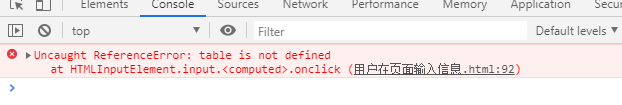
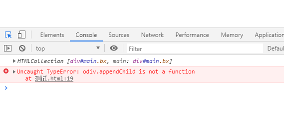
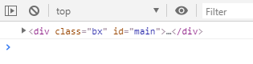

先简单说下每个方法对应的语句和用法
obj.appendChild(node) 把新的子节点添加到指定节点（插入新的子节点（元素）），这么说可能不是很明白，代码可能更清晰哈！node表示的就是要添加的节点。
1 // 获取元素
2 var div=document.getElementById("div1");
3 // 创造元素，给元素添加些文字
4 var p=document.createElement("p");
5 p.innerHTML="添加1";
6 var p1=document.createElement("p");
7 p1.innerHTML="添加2";
8 var p2=document.createElement("p");
9 p2.innerHTML="添加3";
10 // 添加到div中
11 div.appendChild(p);
12 div.appendChild(p1);
13 div.appendChild(p2);但是这个方法只能在父节点的末尾添加元素。那如果我们要在父元素的中间添加怎么办呢。w3c又提供了一个方法，就是obj.insertBefore(node,existingnode)。
obj.insertBefore(node,existingnode) 表示的是在指定的已有子节点之前插入新的子节点。node表示要添加的节点，existingnode表示在其之前插入新节点的子节点。如果未规定，则 insertBefore 方法会在结尾插入。
1 // 获取元素
2 var div=document.getElementById("div1");
3 // 创造元素，给元素添加些文字
4 var p=document.createElement("p");
5 p.innerHTML="添加1";
6 var p1=document.createElement("p");
7 p1.innerHTML="添加2";
8 var p2=document.createElement("p");
9 p2.innerHTML="添加3";
10 // 添加到div中
11 div.appendChild(p);
12 div.insertBefore(p1,p);
13 div.insertBefore(p2,p1);insetBefore()也可以说是插入以节点哈！
obj.replaceChild(newnode,oldnode) 用新节点替换某个子节点。oldnode节点必须是obj元素子节点，他的返回值是一个指向已经被替换的那个子节点的引用指针。
1 var div=document.getElementById("div1");
2 // 创建元素，给元素添加些文字
3 var p=document.createElement("p");
4 p.innerHTML="添加1";
5 var p1=document.createElement("p");
6 p1.innerHTML="添加2";
7 var p2=document.createElement("p");
8 p2.innerHTML="添加3";
9 // 添加到div中
10 div.appendChild(p);
11 div.insertBefore(p1,p);
12 div.insertBefore(p2,p1);
13 // 新创建一个元素
14 var span=document.createElement("span");
15 span.innerHTML="span";
16 // 替换第一个p
17 div.replaceChild(span,p);如果被插入的元素本身还有子节点，则那些子节点也被插入到目标节点前。
replaceChild()方法也可以用文档树上的现有节点去替换另一个现有节点。代码更能清晰表现出！
1 // 获取元素
2 var div=document.getElementById("div1");
3 // 创建元素，给元素添加些文字
4 var p=document.createElement("p");
5 p.innerHTML="添加1";
6 var p1=document.createElement("p");
7 p1.innerHTML="添加2";
8 var p2=document.createElement("p");
9 p2.innerHTML="添加3";
10 // 添加到div中
11 div.appendChild(p);
12 div.insertBefore(p1,p);
13 div.insertBefore(p2,p1);
14 // 将p2替换为p
15 div.replaceChild(p,p2);使用replaceChild()方法的tips：
removeChild(node) 删除子节点（元素），这个就直接上代码吧！
1 // 获取元素
2 var div=document.getElementById("div1");
3 // 创建元素，给元素添加些文字
4 var p=document.createElement("p");
5 p.innerHTML="添加1";
6 var p1=document.createElement("p");
7 p1.innerHTML="添加2";
8 var p2=document.createElement("p");
9 p2.innerHTML="添加3";
10 // 添加到div中
11 div.appendChild(p);
12 div.insertBefore(p1,p);
13 div.insertBefore(p2,p1);
14 // 删除p1
15 div.removeChild(p1);知识点大概就是这样。没什么难点。不过我在做案例的时候，也碰到了一些问题。就是父元素的问题，之前做添加信息的案例时，发现如果在table中直接写tr时，然后用table当作父元素，给里面添加行，会报如下错误。

这是因为table里面直接写tr，虽然不会报错，但浏览器会给你生成一个tbody，这样就会导致tr不是table的孩子，就会出现这样的错误，所以要注意父元素是否写对，其实也可通过子选父，这样保证了不会出现这样的错误。
在添加元素时也会有这样的问题。
1 var odiv=document.getElementsByTagName("div");
2 console.log(odiv);
3 var span =document.createElement("span");
4 odiv.appendChild(span);1 var odiv=document.getElementsByClassName("bx");
2 console.log(odiv);
3 var span =document.createElement("span");
4 odiv.appendChild(span);这两种都会出现下列情况。

但是用getElementById和querySelector可以添加成功。
1 var odiv=document.querySelector("div");
2 var odiv=document.getElementById("main");
3 console.log(odiv);
4 var span =document.createElement("span");
5 odiv.appendChild(span);是因为getElementsByClassName等返回的数组，要解析才行。
1 var odiv=document.getElementsByClassName("bx")[0];
2 console.log(odiv);
3 var span =document.createElement("span");
4 odiv.appendChild(span);